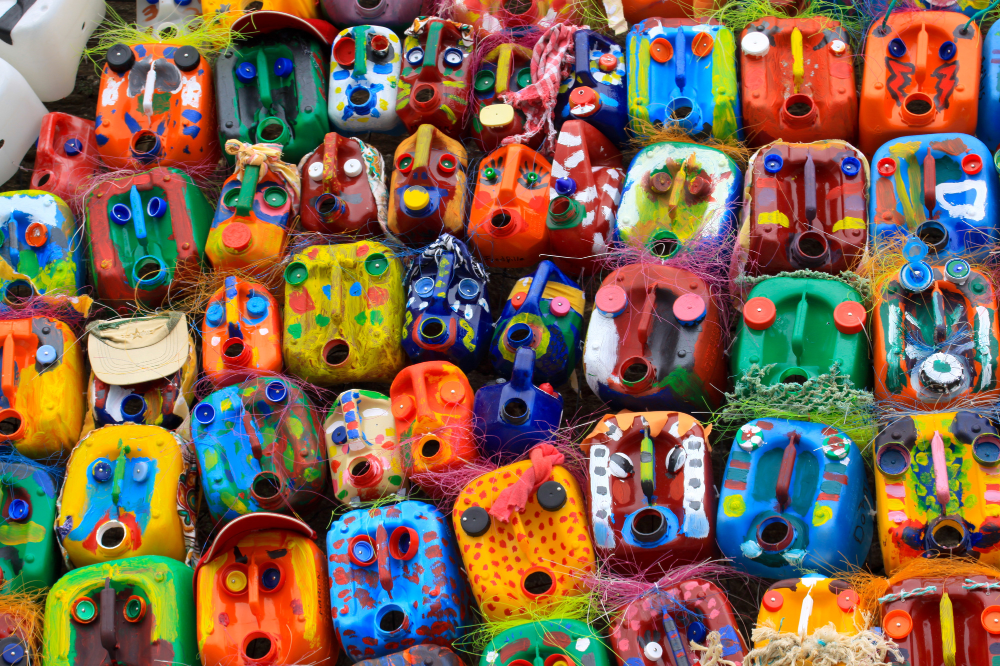

O que é o Agrinho?
O Agrinho é um programa super legal do SENAR-PR que nos ensina a amar e cuidar do nosso planeta! Aprendemos sobre plantas, animais, a importância da água e como ser bons cidadãos. É como uma aventura no campo, mas dentro da sala de aula e em visitas!
🌱
Natureza e Meio Ambiente
Como proteger nossas florestas e rios.
🍎
Alimentação Saudável
De onde vem nossa comida e como ela nos deixa fortes.
💡
Cidadania e Ética
Como ser um bom amigo e ajudar a comunidade.
Nossas Atividades e Projetos
Olha só o que a gente já fez e aprendeu no Agrinho! Cada atividade é uma nova aventura!

Nossa Horta na Escola
Plantamos sementes e cuidamos dos nossos vegetais. É muito legal ver crescer!

Visita à Fazenda!
Conhecemos os animais e aprendemos como funciona uma fazenda de verdade.

Arte com Reciclagem
Transformamos lixo em arte e aprendemos a importância de reciclar.
Curiosidades do Campo
Você sabia? Coisas incríveis que só o campo pode nos ensinar!
- As abelhas são super importantes para as plantas e para a nossa comida. Elas polinizam as flores! 🐝
- Uma gotinha de água economizada é uma gotinha de vida para o planeta! 💧
- As árvores nos dão sombra, ar puro e frutas deliciosas. Que tal abraçar uma árvore hoje? 🌳
- O solo é como a casa das plantas. Quanto mais saudável ele for, mais comida ele produz! 🥕
Fale Conosco!
Tem alguma pergunta ou quer saber mais sobre o Agrinho? Mande uma mensagem!